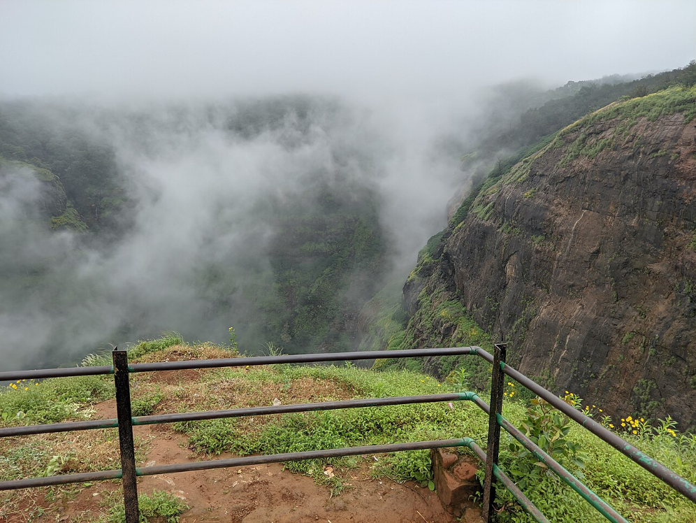
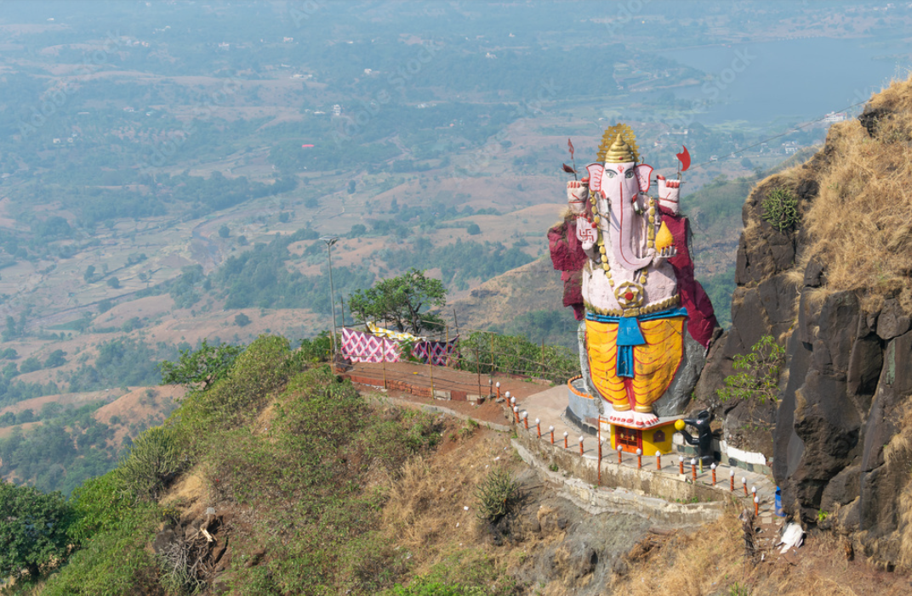
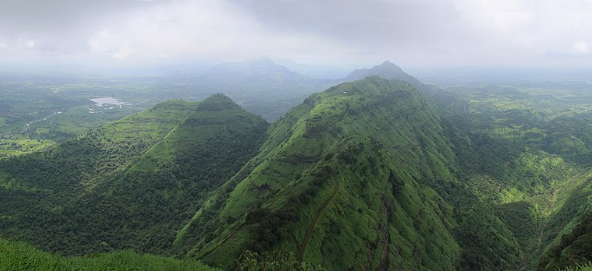

Echo Point
Famous for its natural echo phenomenon and breathtaking valley views.

Ganesh Point
Kadyavarcha Ganpati, is one of the most spiritually significant and scenic viewpoint.

Panorama Point
Best sunrise spot offering 360° panoramic views of the valley.

Charlotte Lake
A peaceful lake surrounded by greenery and ideal for relaxation.

Louisa Point
Offers stunning valley views and waterfalls during monsoon.

One Tree Hill Point
A unique trekking destination known for its single tree hilltop.